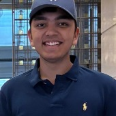
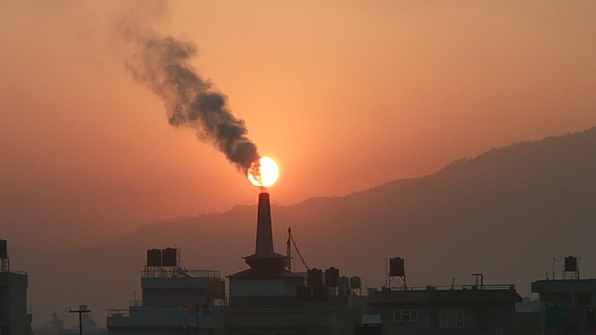
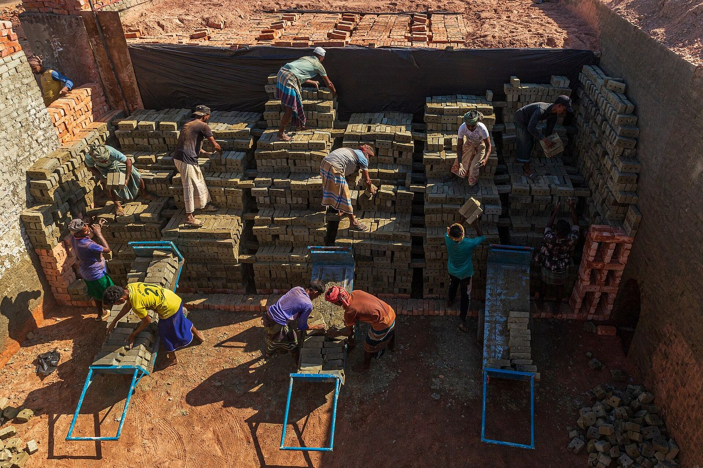
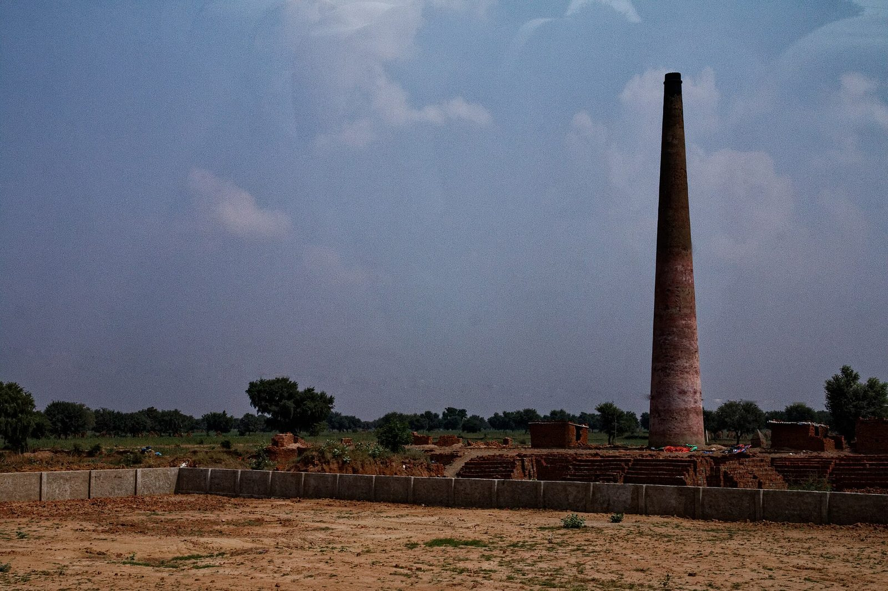
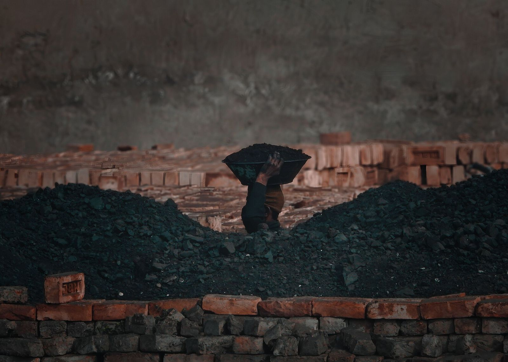
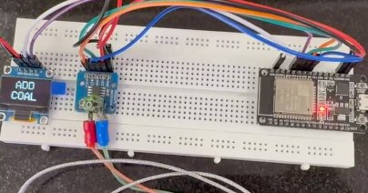
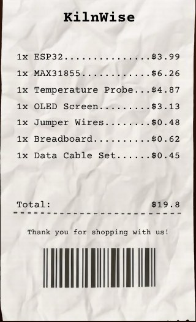
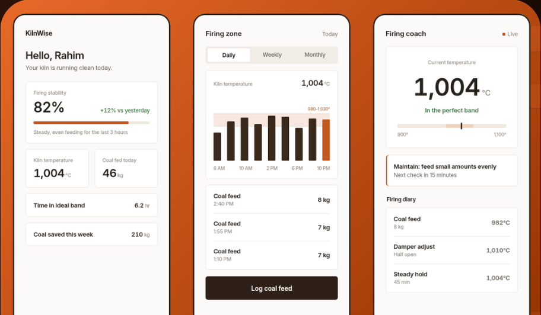
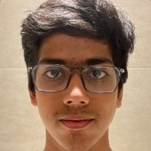

Vihaan Choudhary
Hardware and prototype development
Built and bench-validated the ESP32 sensing core at roughly 1,000 °C, and priced every component from receipts and live retail.
KilnWise is an affordable firing coach for coal-fired brick kilns. A probe reads the fire every two seconds, and the operator gets one clear instruction: feed now, hold, or keep it steady. No grid power, no internet, no engineer.
Recommended by Kanhaiya Lal, Minister for Public Health Engineering, Government of Rajasthan.
Kiln temperature is judged by eye. Every misjudgment wastes coal, weakens bricks and puts black carbon into the air the workers breathe.

150,000+brick kilns across South Asia
16 millionkiln workers breathing the smoke
2 in 3parts of kiln smoke are black carbon
115,000 tof black carbon a year from South Asian kilns

Black carbon is the second strongest driver of global warming, and it settles on Himalayan ice. Kilns fire right through the winter smog season, beside the homes and schools of the brick belt.
Zigzag conversion is already mandated in India, yet surveys in the NCR found only about one kiln in three converted, and close to 90% running without monitoring.
Three decades of rules never reached the fire. A reading can.
Rajasthan had 2,037 brick kilns on the official count in July 2023. 1,730 still fired the old fixed-chimney way.
Around Jaipur, almost none had converted to zigzag firing. Alwar, inside the National Capital Region and under its 2022 clean-kiln directions, converted 146 of its 149.

Brick kilns by firing technology, July 2023
Source: CPCB interim progress report to the National Green Tribunal, O.A. 67 of 2022, district table as on 17 July 2023. Alwar's switch followed the 2022 zigzag notification and NCR clean-fuel directions (Down To Earth, March 2024).
| District | Fixed chimney | Zigzag | Closed | Total |
|---|---|---|---|---|
| Jaipur North | 181 | 2 | 0 | 183 |
| Alwar | 0 | 146 | 3 | 149 |
| Jhunjhunu | 110 | 0 | 0 | 110 |
| Sikar | 91 | 0 | 0 | 91 |
| Ajmer | 24 | 0 | 0 | 24 |
| Sawai Madhopur | 23 | 0 | 0 | 23 |
| Tonk | 12 | 1 | 0 | 13 |
| Rajasthan, all 24 districts | 1,730 | 263 | 44 | 2,037 |
That is the belt KilnWise is built for: 441 fixed-chimney kilns across Jaipur North and the five districts around it, still fired by eye.
Every misjudged charge wastes coal and sends black carbon up the stack. KilnWise is built to make every charge a steady one.
A K-type probe in a steel sleeve reads the firing zone through the kiln wall. A small computer beside it turns each reading into one instruction.

Strip sensor noise so one flicker never moves the verdict.
Built and bench-validatedSpot each coal charge by its temperature signature.
Designed, trains on pilot dataLearn the kiln's own rhythm and project two to three minutes ahead.
Designed, trains on pilot dataAdvise the operator, then trim the damper within hard limits.
Advice built, damper on the roadmapBelow 940 °C
Too cool
Feed now: add a fresh charge of coal.
बहुत ठंडा है। अभी कोयला डालें।
940–979 °C
Warming
Feed a little more.
गरम हो रहा है। थोड़ा और कोयला डालें।
980–1,030 °C
In the band
Maintain: feed small amounts evenly.
ऐसे ही रखें: थोड़ा-थोड़ा, बराबर कोयला डालें।
1,031–1,070 °C
Running hot
Hold the next charge.
गरम है। अगला कोयला अभी न डालें।
Above 1,070 °C
Too hot
Stop feeding until it settles.
बहुत गरम है। ठीक होने तक कोयला न डालें।


An ESP32, a MAX31855 amplifier, a K-type probe and an OLED screen: $19.80 in parts, receipted. On the bench, the probe tracked hot water from 28 °C to a 76.8 °C peak in about 80 seconds.
Built and bench-validatedThe same core, hardened and given hands. It is designed for the kilns that already exist, and the first units go into the 2026–27 pilot.
| Component | Cost |
|---|---|
| Electronics coreThe prototype's ESP32 board. It reads the fire every two seconds and shows one instruction.Built and bench-validated | $19.80 |
| High-temperature probe and thermowellAn industrial K-type probe in a steel sleeve, fitted through the firing-zone wall and hardened for 1,000 °C.Designed | $8 |
| CO₂ and CO sensingScores how completely each charge of coal burns: the number institutions can audit.Designed | $19 |
| Solar power and data linkNo grid and no internet. The unit talks to the operator's phone over Bluetooth.Designed | $9 |
| Fail-open actuatorBolts to the damper the kiln already has. Lose power and it opens; the manual lever always wins.Designed, damper control on the roadmap | $30 |
| Enclosure, custom PCB, assemblyThe breadboard circuit, printed and sealed against heat and dust.Designed | $8 |
The core is receipted. Everything else is priced from current Indian retail.
A human training programme, per kiln. It leaves when the trainer does.
KilnWise, installed. It stays at the kiln.
Mount the thermowell through the firing-zone wall, the sealed box outside, the solar panel above it.
Bolt the fail-open actuator to the damper the kiln already has. The manual lever stays.
Check the reading against a reference, sweep the actuator, log both offsets.
Watch first, then advise. Closing the damper loop comes later, earned on that kiln.
A ten-minute walkthrough in the operator's own language. The operator owns the data.

One instruction per screen, large controls and flat navigation. Every instruction is also spoken in the operator's own language.
Solar powered, with no grid and no internet. The unit lives beside the kiln through the firing season.
The damper actuator fails open. Autonomy is earned in stages: watch, then advise, then act, each proven on that kiln first.
No worker surveillance. Only what coaching needs is recorded. The log becomes the owner's savings report and a verifiable record of firing practice for authorities.
“…many sound proposals are lost in the distance between a technical solution and a functioning public system.
Swastik, Vihaan and Rohan have treated that distance as part of the engineering problem.”
No money changes hands. We get site access and a named counterpart; they get first data rights.
Inside the partner's existing programme district, across the 2026–27 firing season, designed like an experiment.
Measured by research partners rather than by us, so the data is theirs to trust, not ours to claim.
Procurement at $200 installed with $69 a year of service, deployed by the programme's own field teams.
Kilns fire from about November to April. We install and train in the off-season, measure through the firing season, and tender with a season of data in hand.

Hardware and prototype development
Built and bench-validated the ESP32 sensing core at roughly 1,000 °C, and priced every component from receipts and live retail.

Software: firing guidance and data logging
Designed the app for low-literacy operators, with one instruction per screen and voice guidance in the operator's language.
Testing and implementation under real kiln conditions
Owns the evidence base: every figure is traced to a primary source or dropped.
“I recommend Swastik Dash, Vihaan Choudhary and Rohan Khandelwal without reservation.”